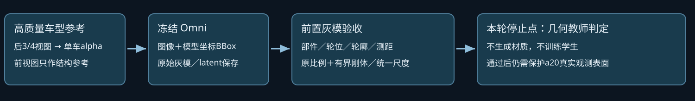

Omni＋高质量二维参考：车辆灰模教师
2026-11-22 · a20黑色皮卡 · 固定seed101／50步／CFG4.5／解码256
高质量参考改善了粗车型结构；测距与局部部件关系仍未通过，暂不作为合格a20教师。

固定实验与验收
| 项目 | 结果 | 判定依据 |
|---|
| 当前结论 | 粗车型几何候选；未通过a20教师准入 | 测距失败，部件细节仍需修复 |
| 测距均值／P90 · 全部1030点 | 9.93 cm／38.02 cm | 预登记门槛 ≤7.5 cm／≤15 cm：未通过 |
| raw86 可见核心召回／未知区排除IoU | 98.46%／98.46% | ≥95%／≥90%：通过 |
| raw110 可见核心召回／未知区排除IoU | 99.06%／99.06% | ≥95%／≥90%：通过 |
| 可靠背景溢出 · raw86／110 | 0%／0% | ≤0.5%：通过 |
| 配准后长×宽×高 | 4.861×2.550×1.981 m | 各轴相对已知框0.8～1.25：通过 |
| 结构检查 | 四轮、两轴、驾驶舱／货厢关系可辨 | 轮胎、轮拱、底盘仍有熔连；未认定高质量 |
| 实际模型输入 | 后3/4单车RGBA；前3/4仅作结构参考 | 官方图像列表为独立batch，未使用多图联合条件 |
| 本轮计算 | 两次形状推理；训练0步 | 初次框轴诊断＋一次坐标修正重放；GPU保持开机 |
原始参考与灰模结果
用户提供的高质量车型参考
 左侧后3/4视图作为Omni输入；右侧前3/4视图只作结构核对。
左侧后3/4视图作为Omni输入；右侧前3/4视图只作结构核对。实际输入：后3/4原始RGB裁片
 模型使用此裁片的前景RGBA；原始RGB未重绘、未缩放。
模型使用此裁片的前景RGBA；原始RGB未重绘、未缩放。实际输入的前景Alpha
 推理前修正近侧后轮被抠图截断的问题；保留轮胎和后视镜。
推理前修正近侧后轮被抠图截断的问题；保留轮胎和后视镜。框轴修正后：原始Omni灰模
 未用测距变形；车顶与后视镜较干净，四轮和货厢可辨。
未用测距变形；车顶与后视镜较干净，四轮和货厢可辨。固定候选：正交六视灰模
 前、后、左、右、顶、底；只作有界刚体及统一尺度配准，未分轴拉伸。轮拱、后轮和底盘仍偏粗糙。
前、后、左、右、顶、底；只作有界刚体及统一尺度配准，未分轴拉伸。轮拱、后轮和底盘仍偏粗糙。实测点与表面残差
 全部1030个实测代理点保留；较大残差集中驾驶舱后部，尾门区域贴合较好。
全部1030个实测代理点保留；较大残差集中驾驶舱后部，尾门区域贴合较好。raw86：可见轮廓投影
 固定可见核心和可靠背景分别检查；未知遮挡区不作为完整轮廓真值。
固定可见核心和可靠背景分别检查；未知遮挡区不作为完整轮廓真值。raw110：可见轮廓投影
 轮廓指标通过；不能替代完整形状及实测点检查。
轮廓指标通过；不能替代完整形状及实测点检查。保留的初次结果：框轴接线错误诊断
 初次把车辆LWH直接传为模型XYZ，使车体过宽。该结果单独归档，不作为有效Omni能力对照。
初次把车辆LWH直接传为模型XYZ，使车体过宽。该结果单独归档，不作为有效Omni能力对照。判断
这张参考能够驱动Omni生成较完整、部件关系可辨的皮卡灰模。但它目前适合作为车型级粗几何候选，尚不能作为已验收的a20教师。
本轮发现并修正了BBox轴序接线错误：Omni接口直接使用原始XYZ，模型前方为−Z、上方为+Y。将车辆LWH改为模型的WHL后，统一按5米车长初始化，车宽从3.72米降至2.62米。固定同一图像、seed、步数和门槛，只重放一次。
测距失败具有局部性：尾部649点均值3.64厘米、P90为6.72厘米；驾驶舱后部314点均值18.93厘米、P90为41.37厘米。raw86与raw110分别统计仍失败，不能通过继续整体下移解决。
四轮／两轴、驾驶舱／货厢关系比早期占位先验清楚，车顶和后视镜没有明显漂块；轮胎轮拱和底盘仍有低频熔连，前格栅和细部结构较粗。网格完整与轮廓通过不构成教师准入。
本轮按前置灰模协议停止：未生成材质、未训练学生，也未替换真实可见车身。下一步若继续，应保留可见a20表面，针对缺失部件修复并重新通过灰模门，再进入教师蒸馏。
生成前固定的工程门槛